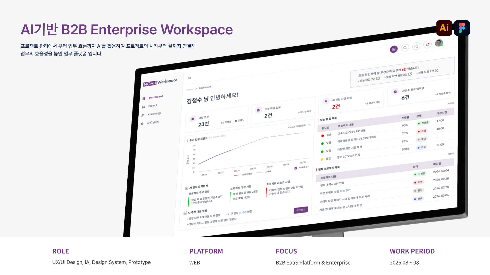

AI기반 업무 관리 엔터프라이스

프로젝트 개요
프로젝트 목표
실무에서 경험한 엔터프라이스 업무환경을 바탕으로 프로젝트 관리, 문서 검색지원, 업무 정보 기능을 하나의 워크스페이스로 통합하고 동시에 AI기능을 넣어 현재 업무에 필요한 정보를 찾아 효율적인 업무환경 제공을 목표로 한다.
디자인 목표
정보의 우선순위를 고려해 복잡한 정보를 빠르게 파악할 수 있도록 직관적인 UI설계와 디자인 시스템을 구축하고, AI 기능을 추가하여 정보 탐색, 분석, 의사결정 등 사용자에게 실질적 도움이 될 수 있도록 기능을 연계한다.
프로젝트 타입
AI기능을 바탕으로 프로젝트 관리, 문서 검색지원, 업무 정보 기능을 하나의 워크스페이스로 통합한 업무 관리 플랫폼
프로젝트 유형
B2B SaaS Platform, End-to-End Product Design
제작 방향


등록된 업무 데이터를 AI가 분석하여 사용자가 확인해야할 정보를 파악 → 업무관리 → 정보탐색 → 판단 및 실행 순으로 제공하여 업무를 체계적으로 관리할 수 있도록 제작되었습니다.
핵심화면
업무의 흐름을 하나의 흐름으로 연결 시 AI가 현재 등록되어있는 업무를 기반으로 다음 행동을 유도하고 이에 따라 먼저 분석해 필요한 정보를 먼저 알려준다면 사용자가 원하는 정보를 찾는데 소요되는 불필요한 시간을 감축시킬 수 있지 않을까? 고민하면서 UI/UX를 설계하였습니다.
상세 프로젝트 보기
*AI학습·무단 전재·복제 및 외부 배포를 금합니다.


© 2026 Leesujin. All rights reserved.